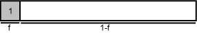

How many grains are needed for a provenance study?
Abstract
Detrital provenance studies using single-grain geochronology are very labor-intensive. This paper presents a method for calculating k, the smallest number of grains in a sample that must be dated to achieve a required level of statistical adequacy. For example, if it is desired that no fraction of the population comprising more than 0.05 of the total is missed at the 95% confidence level, at least 117 grains should be dated. The paper also provides recommendations about cases where fewer than the optimal number of grains have been dated.
1 Introduction
Single-grain age measurements have become a popular way to investigate detrital sedimentary provenance. Such studies must fulfill an important condition that the measured sample is representative of the total detrital population. Dodson et al. [1] argue that at least k=60 grains must be measured to reduce the chance to less than p=5% that one particular fraction (in their case, the oldest) of the population is missed if this fraction is greater than f=0.05, according to:
|
| (1) |
This equation has been used incorrectly (e.g. [2, 3]) to imply that 60 grains would be enough to have 95% confidence that any fraction f≥0.05 of the population was not missed. It will be shown why this is not true (a proof is given in Appendix A), and an alternative will be developed for studies that are interested in all age components, rather than just one. While some studies use 60 grains for the wrong reason, other authors have used even fewer grains, thereby increasing the likelihood of missing significant fractions of the detrital age spectrum (e.g. [4, 5]). However, it is not my intention to suggest that these are necessarily bad studies. In addition to making recommendations for the number of sediment grains that should be dated in a statistically adequate provenance study, this paper also suggests how to report data sets with fewer measurements.
2 The worst-case scenario
Consider a population that consists of M age fractions and define relevant fractions to be those fractions that are greater than f. For a given M (assuming M≤1/f), the worst-case scenario is that M-1 of the population fractions are of size f, and one fraction is of size 1-f(M-1). The probability p that at least one fraction ≥f of the population was missed is given by:
|
| (2) |
with
This is a combinatoric expression where is the binomial coefficient. Each term in the summation adds a correction to the previous terms. Equation 2 is derived in Appendix A. For a given number of relevant fractions m (m≤1/f), a best-case scenario can also be calculated (Appendix A):
|
| (3) |
Exploration of equations 2 and 3 over M and m, and for different values of f and k, is shown in Figure 1. The maximum number of (relevant) fractions for which Equations 2 and 3 are valid is 1/f. At larger values of M (or m), p is kept constant. The shaded region on Figure 1a marks the area where this is the case. One way to reduce the probability that fractions ≥f are missed when only k grains are dated is to reduce the number of bins in the sample histogram. For example, if k=60, f=0.05, and p=20%, then Mopt=6 (Figure 1). A detrital age-histogram that is constructed in this way conveys as much information about the population as can be inferred from the sample and is statistically ”allowed” by p and f. However, it is less well suited for showing the sample distribution. Therefore, such a histogram should be used in conjunction with markers for the sample data, or better still, a probability density plot [6]. Such a combined plot carries an optimal amount of information: the histogram represents the population with the resolution that the data and the parameters p and f allow, while at the same time, the probability density plot represents the data itself and the uncertainties that are associated with it (Figure 2). Mopt usually is a rather small number, much smaller than commonly used guidelines for the number of histogram bins such as Sturges’ rule [7, 8]. Using Mopt will tend to oversmooth the histogram, so although it theoretically is a viable way to reduce the chance of missing significant fractions of the population, there are better methods for dealing with datasets that contain fewer than the optimal number of measurements. These methods are discussed in the following paragraph and the Conclusions section.
Rather than reducing m, a much better way to reduce p is to increase k or f. We now define pmax as the maximum value of p, reached when M=m=[1/f], where square brackets mark truncation to the nearest integer. The equation for pmax is a special case of (2):
|
| (4) |
Figure 3 shows the evolution of pmax as a function of f and k. Note the discrete ”knee” in the pmax vs. f curve wherever M = 1/f. Figure 3 can be used for a quick assessment of the number of grains that are needed for a provenance study, and of the risk of information loss that is caused by smaller samples. For example, if 60 grains are dated, then pmax=64%. Therefore, in the worst-case scenario (which, at m=20, is a perfectly uniform population) there is 64% chance that at least one fraction ≥0.05 of the population is missed. This is a dramatically different result from the 5% probability suggested by Equation 1. Furthermore, the actual fraction fact that we can be sure not to have missed with 95% certainty is not 0.05, but 0.085, as can be read from Figure 3. Finally, and perhaps most importantly, Figure 3 also shows that in order to be 95% confident that no fraction ≥0.05 was missed, at least k=117 grains must be dated. Table 1 can be used to choose k, the number of grains required to lower p and f to some desired limits. If fewer than this optimal number of grains have been dated, Table 2 can be used to estimate the actual levels of p and f that have been achieved with that k. The same table also lists the value of Mopt in the unlikely event that the user prefers to reduce the resolution of the age histogram, rather than to increase the desired p and/or f. Table 1 should be used before embarking on a provenance study to determine how many grains are needed. Alternatively, Table 2 can be used for the interpretation of provenance data with less than the optimal number of grains. For example, if only 30 grains have been dated, Table 2 says that fact=0.15 is the smallest fraction not missed at a 95% confidence level. Likewise, there is 20% chance of missing at least one fraction representing ≥0.12 of the total population, and the probability of missing at least one fraction ≥0.1 when 30 grains were dated is 37%. Finally, to reduce the chance of missing at least one fraction ≥0.2 of the population to less than 10%, and still only use 30 grains, the age-histogram cannot have more than Mopt=5 bins. As an alternative to Figure 3, and to Tables 1 and 2, an online web-form [9] is available for the calculation of k, pmax, fact and Mopt.
Table 1:
The adequate number of grains (k) as a function of the desired probability (p) of missing at least one fraction
≥f of a worst-case population.
3 More realistic populations
As was shown in the first part of the paper, of all possible populations, the most difficult to sample is a perfectly
uniform distribution, where each age fraction is of the same size. It is sufficient to date k grains, according to Figure
3, Table 1 or the web-form [9], to reduce f and p to the desired levels. However, most naturally-occuring
populations differ from the worst-case distribution and it is less likely that statistically significant fractions of such
populations might be missed in a sample. As a consequence, fewer grains need dating to achieve the same levels of
f and p. A number of numerically-generated random populations are discussed next, followed by some real detrital
age-spectra.
3.1 Synthetic populations
In this section, we will try to find the minimum number of grains that have to be dated to adequately represent an ”average” population, as opposed to the best- and worst-case populations of the previous section. We will assume that all possible detrital populations of the geologic record are equally likely to occur. Such populations can be synthetically generated by randomly selecting multinomial proportions from a uniform distribution. This procedure is illustrated in Appendix B. Thus, for any specific number of fractions M, we generate a large number of random populations (e.g. 1000). For each population, we construct a large number (e.g 200) of random samples (again, see Appendix B for details). For each sample, the relevant population fractions are tested to see if the sample contains at least one ”grain age” that falls within it. If at least one of the relevant fractions is empty, the test has failed. The ratio of the number of samples that failed the test to the total number of samples represents an estimate of p. This process is repeated for a range of values for M.
Figure 4 shows the result of this procedure for k=60 and f=0.05. For M ranging from one to 100, 1000 populations of that size were created. For each of these populations, 200 samples of k random numbers were generated. For each value of M, a 5, 50, 95, 99 and 100% percentile was computed from the p-values of its 1000 random populations. The higher its ”percentile”, the closer a synthetic population is to a uniform distribution. For example, a ”99 percentile” population is likely to be strongly multimodal, while a ”5 percentile” population would be more unimodal. All future plots in this paper that are derived from plots like Figure 4 will only consider the 95% percentile populations. That said, Figure 4 is the numerical ”intermediate-case” analogue to Figure 1. p reaches a maximum value at M≈35, and not at M=20, which would be the expected result when only considering the fact that at M=20 (=1/f), the number of relevant fractions (m) reaches a maximum. The reason why the peak is located at a higher M is that p is not only a function of m, but the result of a tradeoff between the number of relevant fractions (m) and the total portion of the population that is covered by these fractions, where the latter parameter steadily decreases with increasing M. From Figure 4 (which, as discussed before, is only valid for k=60 and f=0.05), the chance of missing at least one fraction f≥0.05 in the median population is 10%; p≤18.5% in 95% of the randomly generated populations; p≤25% in 99% of the populations; and p≤ 30% in all 1000 populations. Not surprisingly, these probabilities are significantly less than the 64% which was calculated for the worst-case scenario for the same values of k, f and p with Equation 4. However, even for samples from the median synthetic population, the chance of missing at least one fraction ≥0.05 is more than the 5% which was the result of the erroneous use of Equation 1. Only in little over 5% of all randomly generated populations there is less than 5% chance of missing at least one fraction ≥0.05 of the population when 60 grains were measured. In addition to a numerical analogue to the analytical parameter pmax, it is also possible to obtain a numerical version of Mopt (Figure 4). This value will generally be larger than its analytical equivalent for the worst-case scenario. For example, to reduce the chance of missing at least one fraction ≥0.05 of the population to less than 5%, while still only measuring 60 grains, the maximum number of fractions that can be used in the age-histogram is Mopt=6 (as opposed to Mopt=2 in the worst-case scenario).
By tracing the evolution of the numerical pmax with k and f, Figure 5 illustrates the numerical analogue to Figure 3. It allows a quick estimation of the number of grains that are required for certain key values of f and p. For example, when 95% confidence is desired that no fraction ≥0.05 is missed, and this for 95% of all randomly generated populations, at least ~95 grains have to be dated. This estimate is less than the 117 grains which are necessary in the worst-case scenario, but greater than the 60 grains that Equation 1 implies. Alternatively, when 60 grains are dated, we can be 95% certain that no fraction fact ≥0.07 was missed. As might be expected, the numerical estimate falls in between the worst-case scenario (fact=0.85) and the result from Equation 1 (f=0.05).
3.2 Case studies of real populations
Now that the theoretical foundations have been built to calculate the number of grains required for a statistically
adequate provenance study, they will be tested on real data. Unfortunately, no population is ever completely
known (certainly not if we consider that most published provenance studies work with fewer than 117 ages per
sample). Therefore, two relatively large published detrital data sets will be used as a proxy for the populations that
they were sampled from. By randomly selecting numbers from these ”populations” with replacement, we can
generate synthetic samples. This procedure is similar to what is called ”bootstrapping” in the statistical literature
[10].
Avigad et al. [11] published a set of 157 concordant single zircon U/Pb ages from the Early Paleozoic Nubian Sandstone. The vast majority of these grains are of Pan-African age (900-540 Ma) with relatively few older grains. Therefore, the population is relatively ”easy” to sample (Figure 6). 1000 ”bootstrap samples” of k numbers were selected from the data set for each value of M between 1 and 50, where the latter value is assumed to be the highest number of bins that one would ever want to use in a grain-age histogram. Similar to the algorithm that was used in section 3.1, the proportion of the 1000 samples that miss at least one of the relevant fractions (f≥0.05) was calculated. This exercise was done for k=60, k=95 and k=117 (Figure 6). The pmax vs. M curve of this figure is much more irregular than that of Figures 4 and 1, because it represents only one, irregular population, and not the composite of a thousand random distributions (Figure 4), or one smooth uniform analytical distribution (Figure 1). For k=60, the maximum value for p is 8.8%. As expected, this is less than the 64% predicted by Equation 4, but almost twice as much as predicted by Equation 1. The fact that even samples from this ”easy” population have ≥5% chance of missing at least one fraction ≥0.05 is another confirmation that 60 grains is not enough to attain the degree of adequacy many would consider necessary for a good provenance study. The maximum probability of missing any fraction ≥0.05 is reduced to 1.5% when 95 grains are dated, and if k=117, p is only 0.9%.
As an example that is closer to the worst-case scenario, we now consider a dataset of 155 40Ar/39Ar ages on lunar spherules collected by Apollo 14 [12]. The age-histogram of these data is more evenly distributed than was the case for the Nubian Sandstone (Figure 7). The maximum probability for missing at least one fraction ≥0.05 when only 60 grains are dated is 28%. When 95 grains are dated, the probability of missing at least one fraction ≥0.05 is reduced to 3.7%. Finally, dating 117 grains results in p=1.2%.
4 Conclusions and recommendations
- The optimal number of grains that should be dated of a detrital provenance sample can be looked up from Table 1, Figure 3, or the web-form [9]. To be 95% certain that no fraction ≥0.05 of the population was missed, 117 grains should be dated. This is a fairly large number, often too high perhaps for analytical methods such as fission-track, (U-Th)/He, or TIMS. 117 measurements may be more readily achievable with the ion-microprobe (e.g. [11]) or laser ablation ICP-MS (e.g. [13]).
- If there exists some prior knowledge about the population that indicates it is not uniformly distributed, a risk can be taken to date fewer that the optimal number of grains, by using Figure 5. To be 95% certain that no fraction f≥0.05 was missed, it is recommended that this number be no less than 95. However, dating fewer grains limits the possibility to rigorously calculate and report p and f.
- It is definitely not the purpose of this paper to suggest that studies reporting fewer than 117 single-grain measurements would be scientifically wrong. The purpose of some provenance studies may be to prove the presence of one or more specific age fractions in a detrital population. Once these fractions have been found, there is no reason to date more grains. It is only when provenance studies discuss the absence of certain age fractions that counting statistics come into play. Even then, it may not be possible to date as many as 117 grains for technical, financial or other reasons. If fewer than 117 grains were dated per sample, or when age-histograms must be interpreted from published studies that use fewer than the optimal number of grains, the actual pmax and f values that result from using the available number of grain ages should be reported. For example: if only 60 grains were dated, it is sufficient to report that the maximum probability of missing at least one fraction greater than 0.05 is pmax=64%, or that there is 95% confidence that no fraction fact ≥0.085 was missed. Note that the latter definitely sounds better than the former. Such information can be obtained from Equation 4, Figure 3, Table 2, or the web-form [9]. In theory, an alternative solution to changing p and f would be to reduce the number of bins of the age histogram to Mopt, according to Table 2 or the web-form [9]. However, Mopt is typically a low number which would over-smooth the histogram.
Table 2
fact, pmax and Mopt as a function of k.
Given a specified number of grains (k), this Table shows fact - the smallest population fraction that has not
been missed with at least p% certainty - for four values of p; pmax - the maximum probability of missing at
least one fraction ≥f of a worst-case population - for four values of f; and Mopt - the largest number of bins
that are less than p% likely to miss at least one fraction ≥f of the worst-case population - for four values of
f and p.
Appendix A: derivation of Equations 2 and 3
Of all possible populations, those with a perfectly uniform distribution require the collection of the largest sample in order to be certain that no significant fractions have been missed. We will consider the case where there are M=20 such fractions. This case can easily be generalized to any M. For a perfectly uniform distribution, each of the 20 fractions equals exactly f=0.05.
If we are interested in only one of these fractions, e.g. #1 (in subsequent figures, the shaded box(es) indicate(s) the fraction(s) of interest), then the probability of missing this fraction is p=1-f. The probability that this occurs for each one of k experiments is p = (1-f)k. This is the probability calculated by Dodson et al. [1], and given by Equation 1.

However, if we are not just interested in one particular fraction, but in all 20 fractions, the probability of missing at least one of them is much larger. It is the probability of missing:
or:
or
...
or
In combinatoric terms:
|
| (5) |
While better than (1), this is still not the equation that we want, because the probability that any two fractions are simultaneously missed is counted twice, causing an estimate of p that is too high. Therefore, the following situations:
or
or ...
have to be subtracted from Equation 5. This gives rise to the following expression:
|
| (6) |
Equation 6 is a better approximation than Equation 5, but the probability that three fractions are missed at the same time is subtracted twice, resulting in too low an estimate for p.
Therefore, a correction is added to (6), becoming a third-order approximation:
|
| (7) |
This equation will again overestimate p because the probability of simultaneously missing four fractions is counted twice. It is clear by now that this process of iterative corrections to Equation 5 can be repeated until we have corrected for the probability that all twenty fractions are missed:
This probability equals  (1 - 20f)k = 0, a trivial result. Adding it to the 19 previous corrections
yields:
(1 - 20f)k = 0, a trivial result. Adding it to the 19 previous corrections
yields:
or, generalizing by replacing 20 with M:
|
| (10) |
Equation 10 is a special instance of Equation 2 for A = 0 and B = 0. This form gives the correct value for p when the relevant fractions exactly add up to 100% of the population (i.e. M = 1/f). There are two situations where the relevant fractions do not exactly add up to one:
A = 1, B = 0:
or A = 1, B = 1:
The derivation of p for these cases is completely analogous to the derivation of Equation 10. Equation 2 is a
generalization that takes care of all possibilities.
In addition to the worst-case scenario, a best-case scenario can also be considered given a certain number of relevant fractions (m). If the number of relevant fractions is not known, the lowest possible p is always associated with a delta function (one single age component). For the latter population p equals zero, which is an information-free trivial result. For example, if m = 3, the best-case scenario is given by:
The derivation of p for this case is completely analogous to the derivation of Equation 10 with M = m = 3 and f = 1/3:
|
| (11) |
Appendix B: details of the synthetic population generator.
Consider a specific value for M (the number of fractions), for example M=7. A population is generated by selecting an array of M-1 random numbers between zero and one, drawn from a uniform distribution (xi, with i=1...6). This array is sorted and padded with a leading zero and a trailing one, becoming of size M+1.
The difference between subsequent numbers in the array is a new array of size M (fj, with j=1...7), in which each element represents a fraction of the total population. The population, when generated in this way, is automatically normalized to one.
Random samples are generated by choosing k (for example 20) random numbers between zero and one, also from a uniform distribution. On the following figure, these numbers are marked by black dots. Each of the relevant fractions (”boxes”) of the population is tested to see if the sample contains at least one number (”dot”) that falls within it. On the next figure, the relevant fraction size f is marked by a gray bar. If at least one of the relevant fractions is empty, the test has failed. This is the case for our example, since the third box is empty and f3 ≥f. Note that fraction #7 is also empty, but this is irrelevant because f7 <f.
For each population, the ratio of the number of samples that failed the test to the total number of samples represents one estimate of p. This procedure is repeated for a large number of synthetically generated populations. The iterative process becomes of third order when a range of M values is evaluated (Figure 4).
Acknowledgements
Many thanks to Jianmei Wang for mathematical discussions and assistance; to Mike McWilliams, Raymond Jonckheere and Paul Switzer for useful reviews of initial drafts of the paper; and to Anthony Koppers and Keith Sircombe for insightful and constructive reviews of the submitted manuscript, which greatly improved the readability of the paper.
References
[1] M.H. Dodson, W. Compston, I.S. Williams, J.F. Wilson, A search for ancient detrital zircons in Zimbabwean sediments, J. Geol. Soc. London 145 (1988) 6, 977-983.
[2] A.C. Morton, J.C. Claoué-Long and C. Berge, SHRIMP constraints on sediment provenance and transport history in the Mesozoic Statfjord Formation, North Sea, J. Geol. Soc. London 153 (1996) 6, 915-929.
[3] P.A. Cawood and A.A. Nemchin, Paleogeographic development of the East Laurentian margin; constraints from U-Pb dating of detrital zircons in the Newfoundland Appalachians, Geol. Soc. Am. Bull. 113 (2001) 9, 1234-1246.
[4] J.M. Rahl, P.W. Reiners, I.H. Campbell, S. Nicolescu and C.M. Allen, Combined single-grain (U-Th)/He and U/Pb dating of detrital zircons from the Navajo Sandstone, Utah, Geology 31 (2003) 9, 761-764.
[5] J.C. Grimmer, L. Ratschbacher, M. McWilliams, L. Franz, I. Gaitzsch, M. Tichomirowa, B.R. Hacker and Y. Zhang, When did the ultrahigh-pressure rocks reach the surface? A 207Pb/206Pb zircon, 40Ar/39Ar white mica, Si-in-white mica, single-grain provenance study of Dabie Shan synorogenic foreland sediments, Chem. Geol. 197 (2003) 87-110.
[6] B.W. Silverman, Density estimation for statistics and data analysis, Chapman & Hall, London, 1986, 175 pp.
[7] H.A. Sturges, The choice of a class interval, J. Am. Stat. Assoc. 21 (1926) 65-55.
[8] D.W. Scott, Multivariate density estimation : theory, practice, and visualization, Wiley, New York, NY, 1992, 317 pp.
[9] http://pangea.stanford.edu/research/noble/provenance
[10] B. Efron and R. Tibshirani, An introduction to the bootstrap (1993) Chapman & Hall, New York, NY, 436 pp.
[11] D. Avigad, K. Kolodner, M. McWilliams, H. Persing, T. Weissbrod, Provenance of northern Gondwana Cambrian sandstone revealed by detrital zircon SHRIMP dating, Geology 31 (2003) 3, 227-230.
[12] T.S. Culler, T.A. Becker, R.A. Muller and P.R. Renne, Lunar impact history from 40Ar/39Ar dating of glass spherules, Science 287 (2000) 5459, 1785-1788.
[13] W.R. Dickinson and G.E. Gehrels, U-Pb ages of detrital zircons from Permian and Jurassic eolian sandstones of the Colorado Plateau, USA: paleogeographic implications, Sediment. Geol. 163 (2003) 29-66.